Equipment
Want to know where to buy equipment? We recommend these stores!


Can't decide where to buy? Click the button below for more information.
Visual Display
| Product | Retailer | Description | Price |
|---|---|---|---|
| LCD I2C 1602 Display Module Blue/Yellow 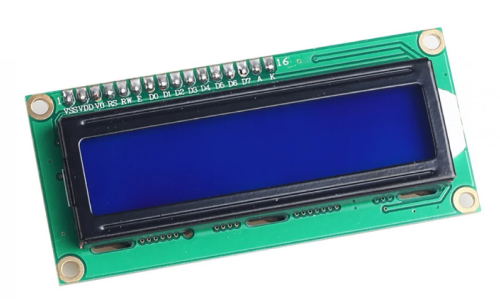 |
CircuitRocks | The LCD I2C 1602 Display Module is an LCD that uses the I2C protocol to communicate with microcontrollers. With this, you only need 4 connections to work with the device: Power, Ground, SDA, and SDL. Furthermore, it can also display a max of 16x2 characters. | 85 |
| LED 5mm 25 pcs Red / Green / Yellow / Blue / White 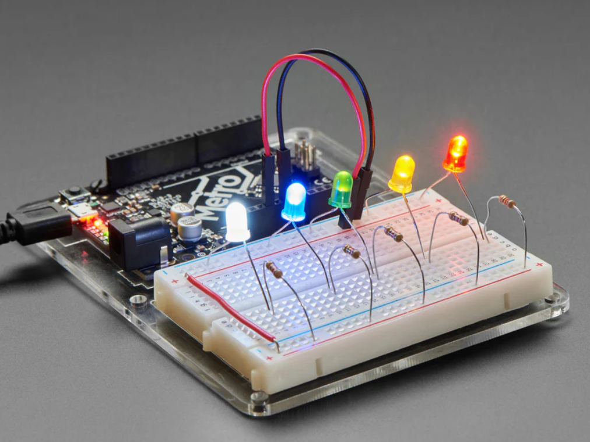 |
CircuitRocks | This is a pack of 2 diffused LEDs in white, blue, green, yellow, and red (5 each per color). | 55 |
LCD Module 1602 16x2 White on Blue Backlight |
e-Gizmo | It is a 5V-powered 16x2 character LCD module with white characters on a blue background, featuring an SPLC780D controller and a 3.9V backlight requiring 120mA nominal current. | 126 |
15s 3mm Assorted LED |
e-Gizmo | The available colors are red, green, blue, yellow, and orange (3 pieces per color). | 15 |
16x2 LCD Display I2C White on Blue |
Makerlab Electronics | The LCD display includes an I2C adapter board based on a PCF8574 I2C chip; it converts I2C serial data to parallel data for the LCD display, thus significantly reducing the number of I/O pins used on the micro-controller to send data to the LCD. | 150 |
50s 5mm LED Assorted Color |
Makerlab Electronics | These are available in white, yellow, red, blue, and green colors with 17mm and 19mm pin lengths, offering a 120-degree viewing angle. | 99 |
I2C 16x2 Arduino LCD Display Module |
Element14 | 16x2 LCD display screen with I2C interface is able to display 16x2 characters on 2 lines, white characters on a blue background. With limited pin resources, your project will quickly run out of resources using normal LCDs. | 623 |
Multicomp Pro MCL053MD 25s 5mm Red LED |
Element14 | The MCL053MD is a 5mm HE red round LED Lamp with a red diffused lens, through hole mounting, round-shaped lens, 15mcd luminous intensity, 625nm peak wavelength, 45° viewing angle. | 133 |
| 16x2 Alphanumeric LCD Display White on Blue 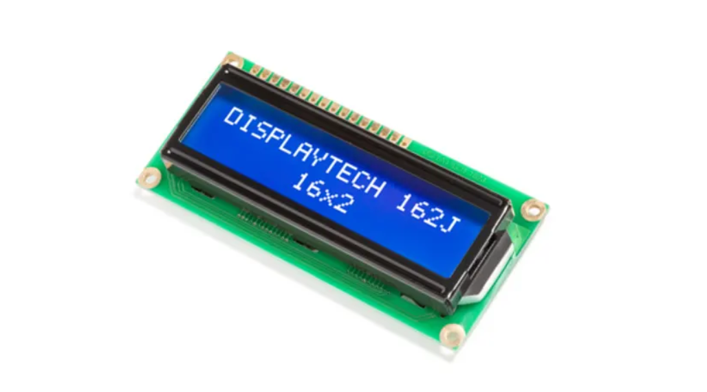 |
RS | The Displaytech 162J series is an STN transmissive type LCD display, which has a supply voltage of typically 4.2 V. | 673 |
| Kingbright 12 V 20s Red LED 5mm 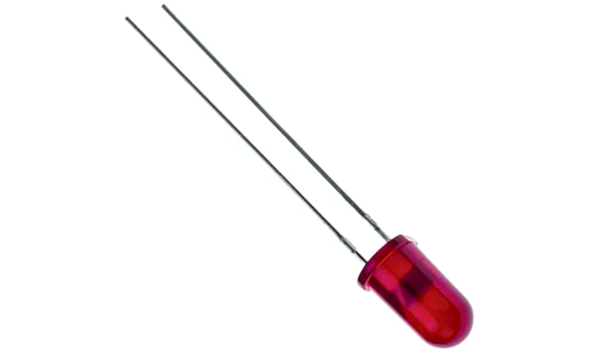 |
RS | The LEDs have an integral current limiting resistor and have a wide viewing angle of 60°. | 280 |
NewHaven 16x2 LCD Display White on Blue |
DigiKey | It is a transmissive character display module with a 5x8 dot matrix featuring white LED backlighting, a parallel interface, and 80mm x 36mm x 13.5mm dimensions. | 797 |
Würth Elektronik 20s Red LED 3mm |
DigiKey | It is a discrete, radial, red LED with a 640nm wavelength, requiring 2.2 volts, featuring a diffused 3mm round through-hole package. | 211 |
| Product | Retailer | Description | Price |
|---|---|---|---|
| Arduino Nano 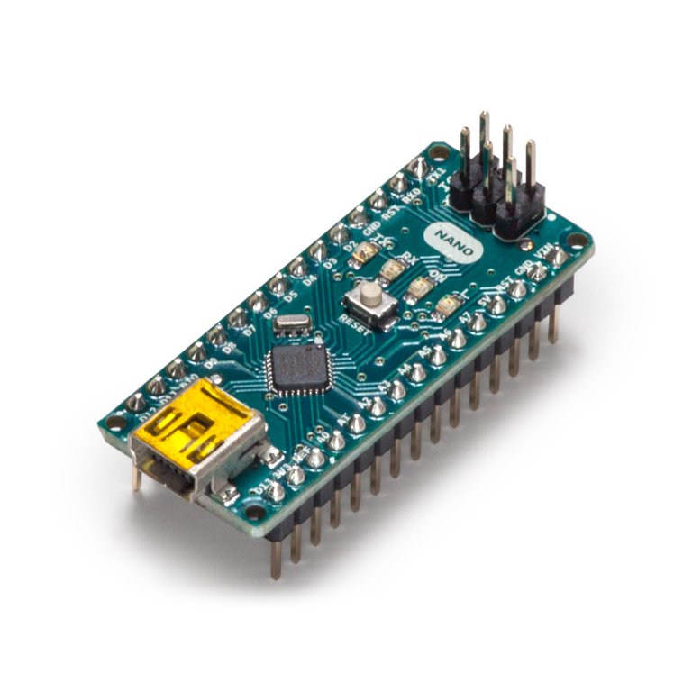 |
CircuitRocks |
|
999 |
| Arduino Uno R3 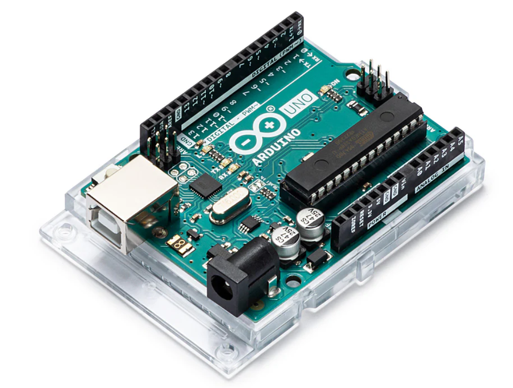 |
CircuitRocks |
|
1789 |
| Raspberry Pi 4 Model B 8 GB RAM 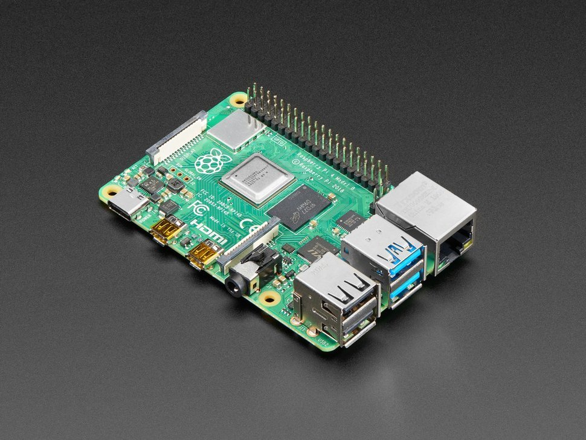 |
CircuitRocks |
|
6500 |
Arduino Uno R3-SMD |
e-Gizmo |
|
1699 |
Raspberry Pi 5 4GB |
e-Gizmo |
|
4585 |
Raspberry Pi 4 4GB Model B |
e-Gizmo |
|
4285 |
| Uno R3 Compatible Board (DIP) 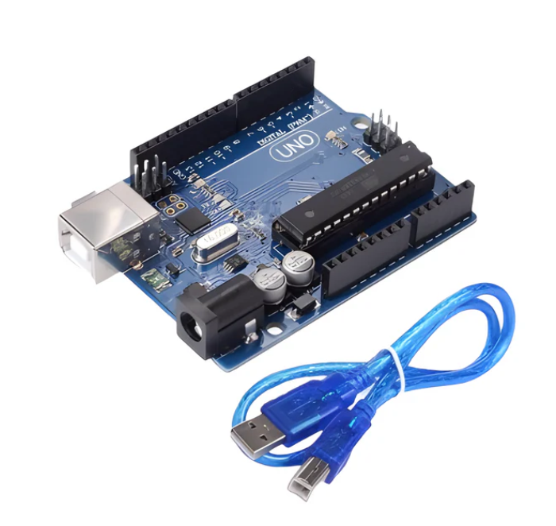 |
Makerlab Electronics |
|
449 |
Arduino Uno R3 Italy |
Makerlab Electronics |
|
1800 |
Raspberry Pi 5 8GB |
Element14 |
|
4555 |
Arduino Nano 33 IoT |
Element14 |
|
1169 |
PIC16F18044 |
RS |
|
158 |
| PIC18F2553 |
RS |
|
681 |
PIC16F1503 |
DigiKey |
|
59 |
| PIC18F26K40 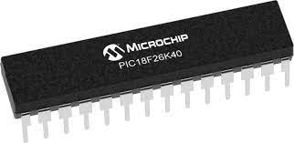 |
DigiKey |
|
110 |
Sensors
| Product | Retailer | Description | Price |
|---|---|---|---|
| Ultrasonic Ranging Sensor HC-SR04 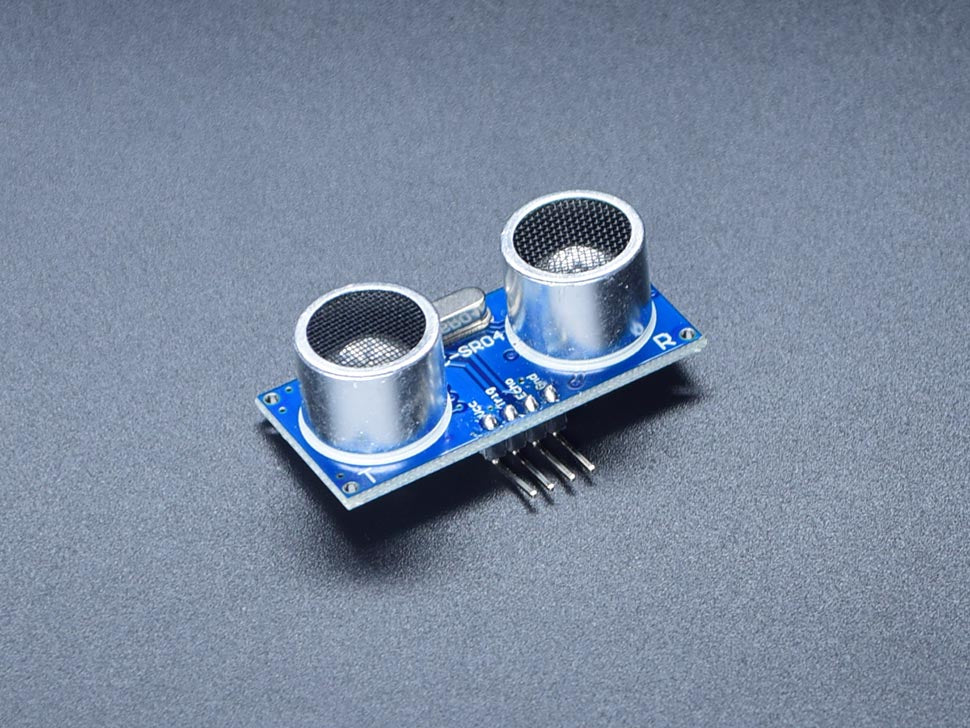 |
CircuitRocks | It is a distance sensor that employs sound to measure the distance between the sensor and the nearest obstacle in its direction. | 67 |
| DHT11 Digital Temperature/Humidity Sensor Module 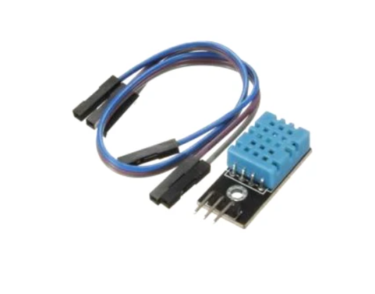 |
CircuitRocks | The thermistor and capacitive humidity sensor used by the DHT11 sensor module monitor temperature and humidity, respectively. | 89 |
HC-SR04 Ultrasonic Distance Sensor |
e-Gizmo | It has a typical sensing range of 20 to 4500 millimeters with a sensing angle of 15 degrees or less, operates on 5 volts, and provides a PWM TTL output. | 59 |
DHT11 Humidity and Temperature Sensor Breakout Board |
e-Gizmo | This sensor includes a resistive-type humidity measurement component and an NTC temperature measurement component and connects to a high-performance 8-bit microcontroller, offering excellent quality, fast response, anti-interference ability, and cost-effectiveness. | 82 |
| Ultrasonic Sensor Distance Measuring Module HC-SR04 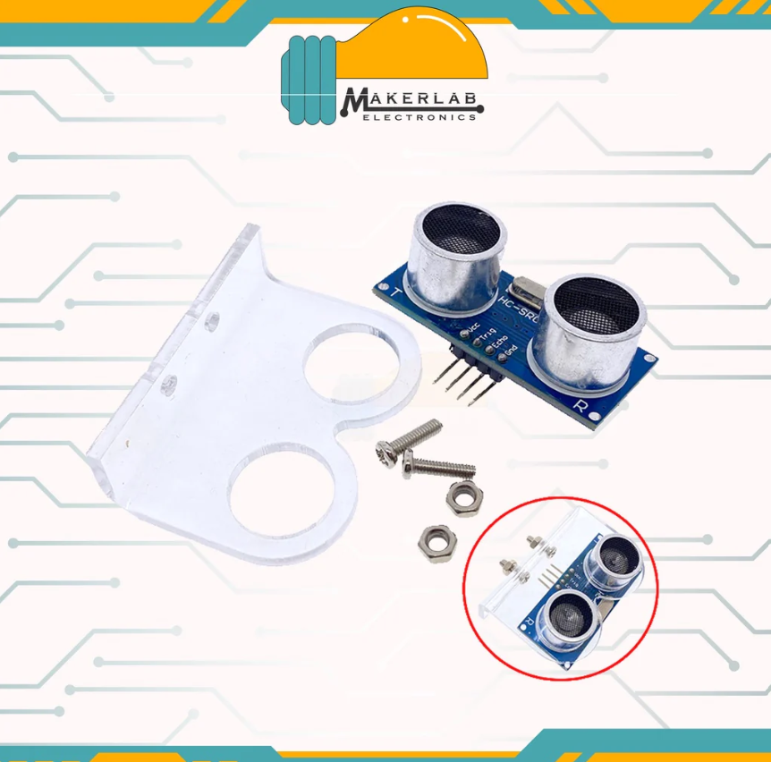 |
Makerlab Electronics | It measures distance using sonar, offering precise and reliable readings from 2 to 400 centimeters unaffected by sunlight or dark objects. This also includes an acrylic mounting bracket designed to hold HC-SR04.. | 40 |
| DHT11 Temperature and Humidity Sensor Module 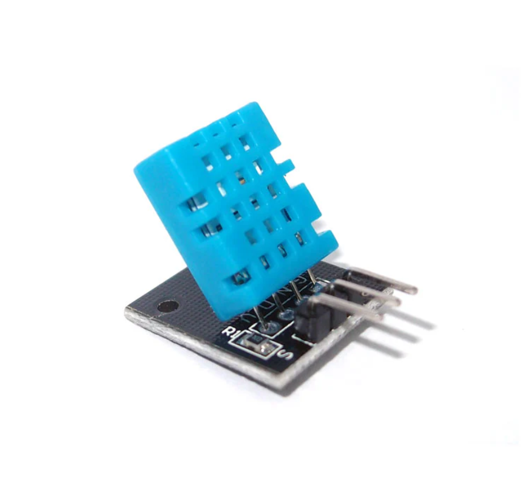 |
Makerlab Electronics | This sensor accurately measures humidity between 20 and 80% with a 5% margin of error and temperature between 0 and 50 degrees Celsius with a ±2 degree accuracy. | 125 |
Sensor Module HC-SR04 Ultrasonic Distance Measurement |
Element14 | It is an ultrasonic transducer that utilizes ultrasonic waves to measure the distance from 3cm to 350cm with an accuracy of 2mm. | 232 |
DHT11 Temperature/Humidity Sensor Board |
Element14 | This sensor has a 0-50°C temperature range, 20-90% humidity measurement, and a 3.3-5V power supply. | 414 |
| Ultrasonic Distance Sensor HC-SR04 5V Version 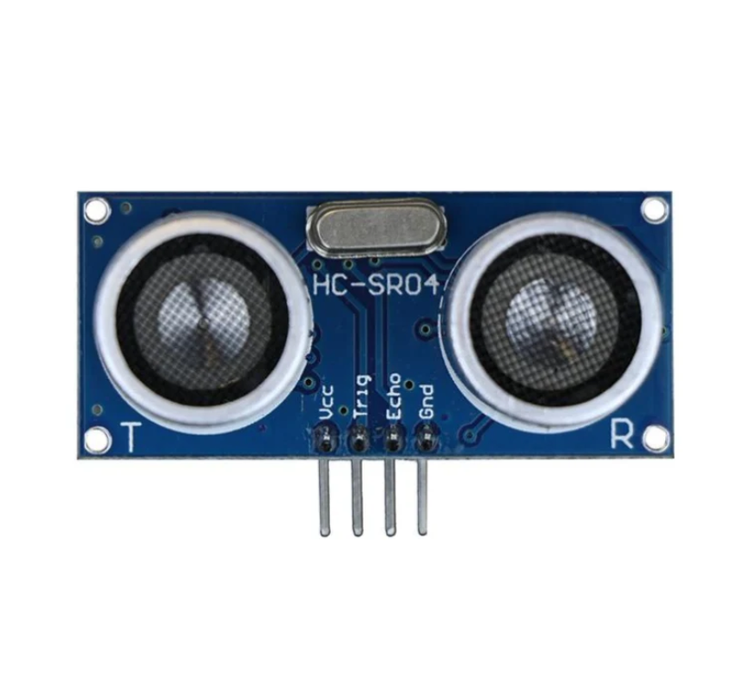 |
RS | This economical sensor provides 2cm to 400cm of non-contact measurement functionality, offering ranging accuracy that can reach up to 3mm. | 177 |
| DHT11 Temperature & Humidity Sensor For Arduino 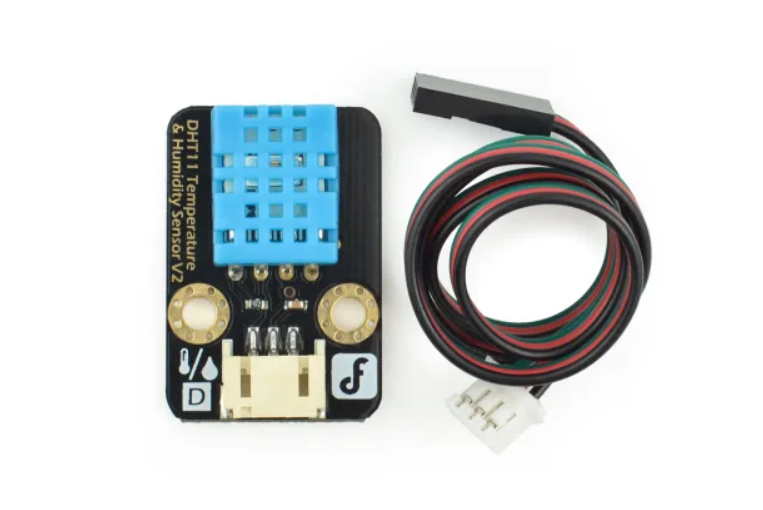 |
RS | This sensor includes a resistive element and wet NTC temperature measuring devices, and its signal transmission distance is up to 20 meters. | 399 |
Adafruit HC-SR04 Ultrasonic Sensor Sonar Distance |
DigiKey | It is an ultrasonic sensor that measures distance using sound waves, providing accurate readings from 2 to 400 centimeters. | 232 |